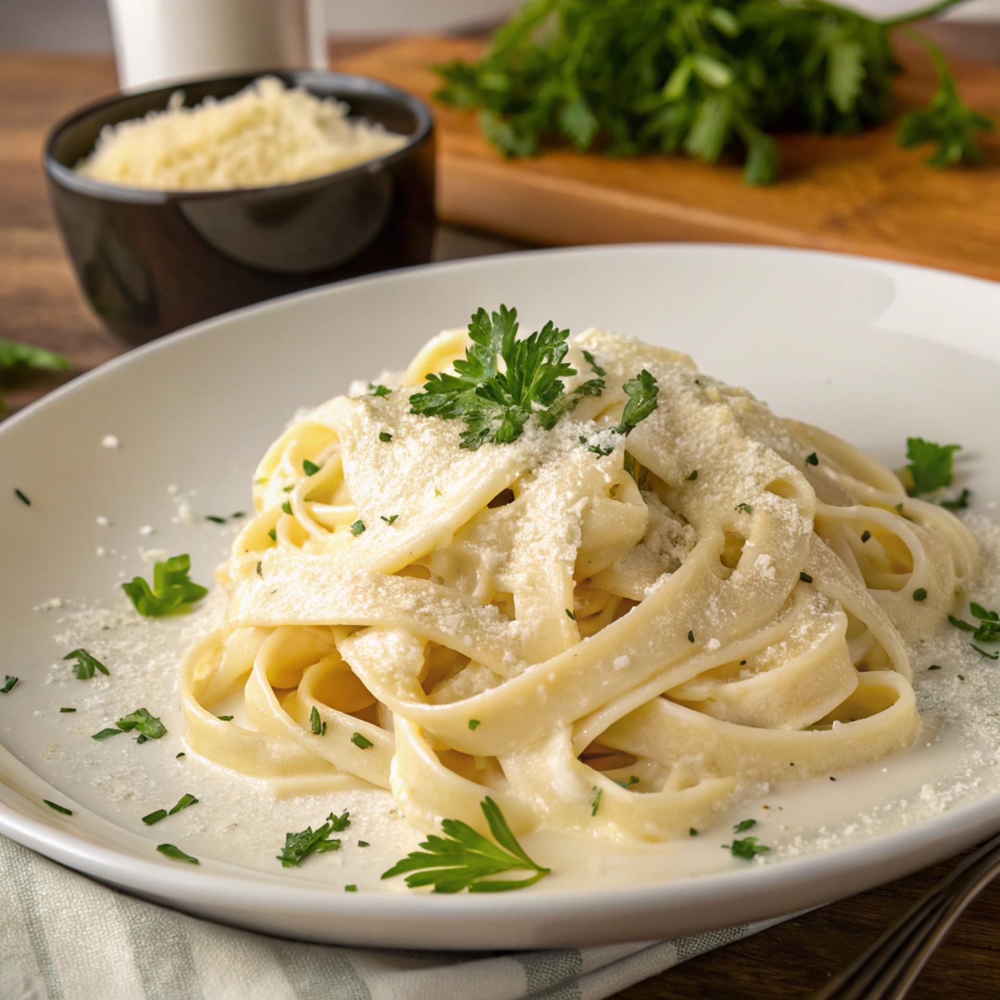

Home
To Die For Fettuccine Alfredo
I created this fettuccine Alfredo by modifying my mother's recipe, and it gets nothing but rave reviews every
time I make it. My boyfriend is a fettuccine Alfredo connoisseur, and he scrapes the pan clean every time — just
be aware that this pasta recipe is not for the health-conscious.

Ingredients
- 24 ounces dry fettuccine pasta
- 1 cup butter
- ¾ pint heavy cream
- 1 pinch garlic salt
- salt and ground black pepper to taste
- ¾ cup grated Romano cheese
- ½ cup grated Parmesan cheese
Directions
- Gather all ingredients.
- Fill a large pot with lightly salted water and bring to a rolling boil. Cook fettuccine at a boil until tender yet firm to the bite, about 8 minutes. Drain.
- Heat butter and cream in a large saucepan over low heat until butter melted; add garlic salt, salt, and black pepper.
- Increase the heat to medium; stir in Romano and Parmesan cheeses until melted and sauce has thickened.
- Add cooked pasta to sauce; toss until thoroughly coated. Serve immediately.